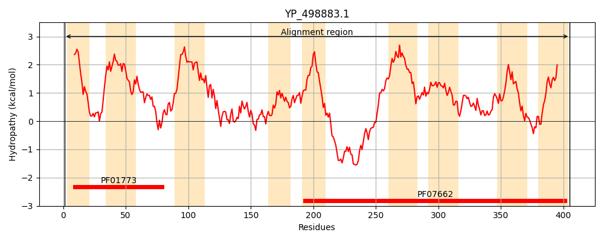
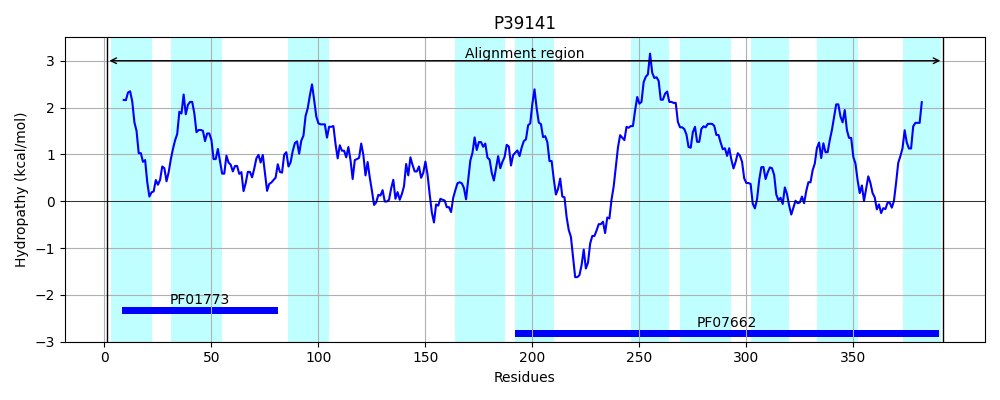
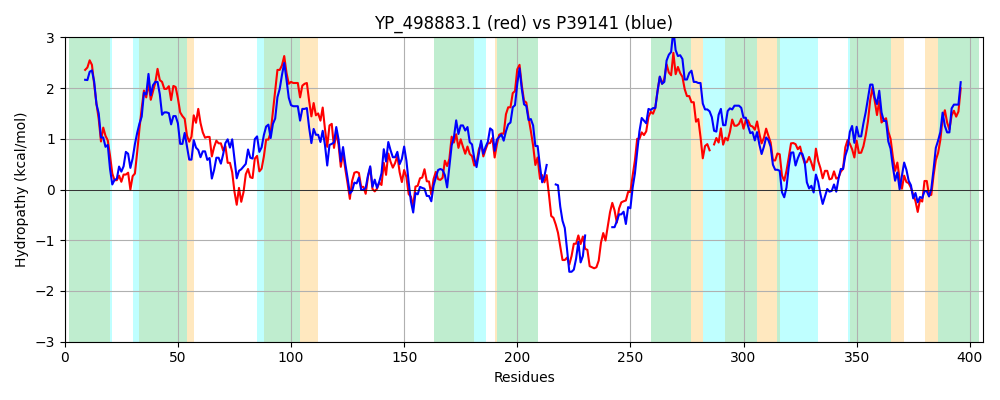

Hit Accession: P39141
Hit TCID: 2.A.41.1.2
Hit Description: gnl|BL_ORD_ID|10240 gnl|TC-DB|P39141|2.A.41.1.2 PYRIMIDINE NUCLEOSIDE TRANSPORT PROTEIN - Bacillus subtilis.
Mach Len: 406
e:0.000000
Query TMS Count : 9
Hit TMS Count: 10
TMS-Overlap Score: 7.550000
Predicted Substrates:CHEBI:5584;hydron, CHEBI:8675;pyrimidine
BLAST Alignment:
Score: 934 , Bit scores: 364 bits, E-value: 3.4e-124, Alignment length: 406, Percentage identity: 46
Query: 1 MNILFAITGIAFALFVAFLFSFDRKKIDFKKTLIMIFIQVLIVLFMMNTTIGLTILTALGSFFEGLINISKAGINFVFGDIQNKNGFTFFLNVLLPLVFISVLIGIFNYIKVLPFIIKYVGIAINKITRMGRLESYFAISTAMFGQPEVYLTIKDIIPRLSRAKLYTIATSGMSAVSMAMLGSYMQMIEPKFVVTAVMLNIFSALIIASVINPYKSDDTDVEIDNLTKSTETKTLNGKTGKPKKVAFFQMIGDSAMDGFKIAVVVAVMLLAFISLMEAINIMFGSV-GLNFKQLIGYVFAPIAFLMGIPWSEAVPAGSLMATKLITNEFVAMLDFKNVLGDVSARTQGIISVYLVSFANFGTVGIIVGSIKGISDKQGEKVASFAMRLLLGSTLASIISGSIIGLV 405
M L I G+ L +A++ S +K+I + ++M+ +Q ++ ++NT IG ++ F L+ + GINFVFG + N + TFF+NVLLP+VFIS LIGI KVLPFII+Y+G+A++K+ MGRLESY A+++A+ GQ EV++++K + L++ +LYT+ S MS VSM+++G+YM M++P++VVTA++LN+F IIAS+INPY + E D L E +K +FF+++G+ +DGFK+AVVVA ML+ F++++ IN +F +V G++F+ ++GYVFAP AFL+GIPW+EAV AGS+MATK+++NEFVAM S RT I+SV+LVSFANF ++GII G++KG+++KQG VA F ++LL G+TL S +S +I+GL+
Sbjct: 1 MKYLIGIIGLIVFLGLAWIASSGKKRIKIRPIVVMLILQFILGYILLNTGIGNFLVGGFAKGFGYLLEYAAEGINFVFGGLVNADQTTFFMNVLLPIVFISALIGILQKWKVLPFIIRYIGLALSKVNGMGRLESYNAVASAILGQSEVFISLKKELGLLNQQRLYTLCASAMSTVSMSIVGAYMTMLKPEYVVTALVLNLFGGFIIASIINPY---EVAKEEDMLRVEEE-----------EKQSFFEVLGEYILDGFKVAVVVAAMLIGFVAIIALINGIFNAVFGISFQGILGYVFAPFAFLVGIPWNEAVNAGSIMATKMVSNEFVAMTSLTQNGFHFSGRTTAIVSVFLVSFANFSSIGIIAGAVKGLNEKQGNVVARFGLKLLYGATLVSFLSAAIVGLI 392 | Protein Hydropathy Plots: |
|---|
|  |  |
Pairwise Alignment-Hydropathy Plot:
|
|---|
|  |